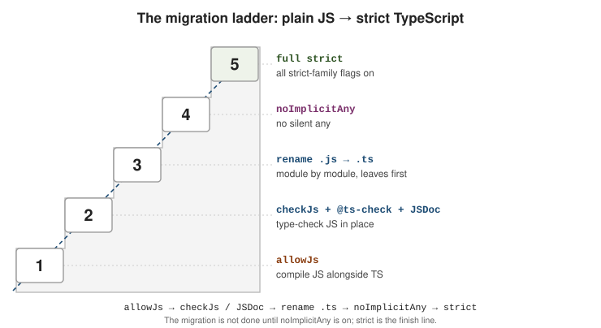

JavaScript Interop and Migration
|
This content was generated with the assistance of AI and should be verified against the official documentation before being relied on in production. |
TypeScript can read, type-check, and gradually replace an existing JavaScript codebase without a big-bang rewrite. The JS Projects Utilizing TypeScript and Migrating from JavaScript handbook pages are the companions to this page; what follows is the working summary.
allowJs, checkJs, and per-file directives
allowJs lets .js (and .jsx) files take part in the compilation — they can be imported by
.ts files, emitted, and bundled. checkJs goes further and reports type errors in every .js
file, exactly as if each one started with a // @ts-check comment.
{
"compilerOptions": {
"allowJs": true,
"checkJs": true,
"target": "es2022",
"module": "nodenext",
"outDir": "dist"
},
"include": ["src"]
}When checkJs is off you can still opt individual files in and out, and you can annotate specific
lines:
// @ts-check
// Opts THIS file into type checking even when checkJs is false.
/**
* @param {number} a
* @param {number} b
*/
function add(a, b) {
return a + b;
}
// @ts-expect-error -- the next line is deliberately wrong; TS must flag it.
add("1", "2");
// @ts-ignore -- silences any error on the next line, or nothing if there is none.
add("1", "2");A file can also start with // @ts-nocheck to opt out when checkJs is on.
Prefer // @ts-expect-error over // @ts-ignore. @ts-expect-error is itself reported as an error
when the following line turns out to have no error, so a suppression that is no longer needed
surfaces the moment you fix the underlying code. @ts-ignore fails open and quietly rots. See
Type Checking
JavaScript Files for the full list of differences between checked .js and .ts.
JSDoc as types
With @ts-check or checkJs active, TypeScript reads JSDoc tags as type information — real
checking with no build step and no new syntax.
/**
* @typedef {object} Point
* @property {number} x
* @property {number} y
*/
/** @type {Point} */
const origin = { x: 0, y: 0 };
/**
* @param {readonly number[]} values
* @returns {number}
*/
function total(values) {
return values.reduce((a, b) => a + b, 0);
}
/**
* @template T
* @param {T[]} items
* @returns {T | undefined}
*/
function first(items) {
return items[0];
}
// Borrow a type from another module or a .d.ts without importing a value.
/** @type {import('./api').User} */
let currentUser;JSDoc can express object shapes, unions, function types, generics via @template, @satisfies,
@overload, and — through import('...') — any type declared in another module or in a
declaration file. What it cannot do comfortably is the
heavier type-level machinery: conditional and mapped types, assertion signatures, and const type
parameters all get verbose fast. The rule of thumb: once the annotations are longer than the code
they describe, move the file to .ts. The
JSDoc Reference lists every
supported tag.
The migration ladder

Migrate from the bottom up. Each rung is a state the whole project can sit in indefinitely; only climb when the current rung is green.
# Rung 1-2: add the compiler and turn on JS checking.
npm install --save-dev typescript
npx tsc --init
# Rung 3: rename leaf modules first -- files that import nothing else of yours --
# then walk UP the dependency graph to their importers.
git mv src/utils/math.js src/utils/math.ts
npx tsc --noEmit// Rung 1-2: compile and check JS in place.
{ "compilerOptions": { "allowJs": true, "checkJs": true } }
// Rung 4: every implicit `any` becomes an error.
{ "compilerOptions": { "noImplicitAny": true } }
// Rung 5: the real finish line -- enables the whole strict family.
{ "compilerOptions": { "strict": true } }A .ts module may import a .js module, so the graph never has to be converted all at once, but
inference is much better when a file’s dependencies are already typed — hence leaves first. Do not
consider the migration done until noImplicitAny is on: before that, TypeScript is silently
filling the gaps with any and most of the safety is theatre. See
tsconfig and Compiler Options for what each
flag in the strict family does.
Checking the worked example’s JavaScript in place
The ladder is easiest to understand on real output. This is step 3 of the
worked example: the HTTP client stays a .js file, gains JSDoc
and is checked by checkJs under strict. The configuration:
{
"compilerOptions": {
"allowJs": true,
"checkJs": true,
"strict": true,
"target": "es2022",
"module": "nodenext",
"noEmit": true
},
"include": ["src"]
}src/client.js, with the type of the state described in a @typedef and a few deliberately weak spots:
/**
* @typedef {{ status: "loading" } | { status: "success", data: unknown } | { status: "error", error: string }} State
*/
/**
* @param {string} baseUrl
* @returns {{ get: (path: string) => Promise<unknown> }}
*/
export function createClient(baseUrl) {
return {
async get(path) {
const res = await fetch(baseUrl + path);
if (!res.ok) throw new Error("HTTP " + res.status);
return res.json();
},
};
}
/**
* @param {ReturnType<typeof createClient>} client
* @param {string} path
* @param {(s: State) => void} onState
*/
export async function load(client, path, onState) {
onState({ status: "loading" });
try {
const data = await client.get(path);
onState({ status: "success", data });
} catch (err) {
onState({ status: "error", error: err.message });
}
}
export function retry(fn, times) {
return fn() || times;
}
/** @param {string} [name] */
export function hello(name) {
return "hi " + name.toUpperCase();
}
// @ts-expect-error
const fine = 1 + 1;A TypeScript file consumes it, which proves that .ts and .js interoperate in the same program:
// src/use.ts
import { load, hello } from "./client.js";
load({ get: async () => 1 }, "/u", s => console.log(s.status));
hello();
hello(3);$ npx tsc -p .
src/client.js(30,39): error TS18046: 'err' is of type 'unknown'.
src/client.js(34,23): error TS7006: Parameter 'fn' implicitly has an 'any' type.
src/client.js(34,27): error TS7006: Parameter 'times' implicitly has an 'any' type.
src/client.js(40,18): error TS18048: 'name' is possibly 'undefined'.
src/client.js(43,1): error TS2578: Unused '@ts-expect-error' directive.
src/use.ts(4,7): error TS2345: Argument of type 'number' is not assignable to parameter of type 'string'.Reading the list is a good exercise in how JavaScript is checked:
-
err.messagefails becausecatch (err)isunknownunderstrict(useUnknownInCatchVariables). The fix is the same as in TypeScript: narrow witherr instanceof Error. -
retryhas no JSDoc, so its parameters are implicitany, reported oncenoImplicitAnyis on. In plaincheckJswithoutstrictthe same function passes silently, which is why rung 4 of the ladder matters. -
@param {string} [name]makes the parameter optional, soname.toUpperCase()is possiblyundefined. The square brackets in JSDoc mean "optional", not "array". -
The
@ts-expect-erroraboveconst finesuppresses nothing, so it is itself an error. That is the property that makes it safer than@ts-ignore. -
loadandcreateClientpass: their parameters and return types are fully described, ands.statusinuse.tsis the union"loading" | "success" | "error". -
hello(3)inuse.tsis reported, so the types written in JSDoc are enforced on callers in other files too.
Generating .d.ts files from JavaScript
If a package is written in JavaScript but ships types, tsc can derive the declarations from the JSDoc, with no
hand-written .d.ts:
npx tsc --allowJs --declaration --emitDeclarationOnly --outDir types src/client.jsThe output for client.js shows how each piece of JSDoc was translated:
export function createClient(baseUrl: string): {
get: (path: string) => Promise<unknown>;
};
export function load(client: ReturnType<typeof createClient>, path: string, onState: (s: State) => void): Promise<void>;
export function retry(fn: any, times: any): any;
export function hello(name?: string): string;
export type State = {
status: "loading";
} | {
status: "success";
data: unknown;
} | {
status: "error";
error: string;
};(The generated file also keeps the original JSDoc comments above each declaration; they are omitted here.) The
@typedef became an exported type, the optional @param became name?: string, and the un-annotated retry
fell back to any as the checker reported. Declaration files are explained on
Declaration Files.
Choosing the first rung
across all files at once?"} Q1 -->|"no, file by file"| T["// @ts-check at the top of
each file you have typed"] Q1 -->|"yes, accept a long list"| C["checkJs: true"] T --> Q2{"Is the file still
worth keeping as .js?"} C --> Q2 Q2 -->|"JSDoc is short and clear"| J["Stay on .js, ship .d.ts"] Q2 -->|"annotations dominate the code"| R["Rename to .ts"] R --> N["noImplicitAny, then strict"] J --> N
Teams that cannot afford a long error list start with @ts-check on the files they touch anyway, and add a
// @ts-expect-error with a short reason on each pre-existing failure. Because an unused @ts-expect-error is an
error, fixing a problem forces you to delete its suppression, so the list of exceptions only shrinks.
Prefer ECMAScript features to TypeScript features
Where a standard ECMAScript feature and a TypeScript-only feature overlap, choose the standard one.
It survives type stripping (Node’s --experimental-strip-types, ts-blank-space, esbuild, swc),
matches runtime semantics, and does not lock code to the compiler.
// ES modules, not namespaces.
export function parse(input: string): number {
return Number(input);
}
// #private fields, not the `private` modifier -- #balance is unreachable at runtime.
class Account {
#balance = 0;
deposit(amount: number): void {
this.#balance += amount;
}
}
// Standard (TC39) decorators, not legacy experimentalDecorators.
function logged<T extends (...args: any[]) => any>(
target: T,
context: ClassMethodDecoratorContext,
): T {
return function (this: unknown, ...args: any[]) {
console.log(`call ${String(context.name)}`);
return target.apply(this, args);
} as T;
}
// Literal unions or `as const` object maps, not `enum`.
type Direction = "north" | "south" | "east" | "west";
const HttpStatus = { ok: 200, notFound: 404 } as const;
type HttpStatus = (typeof HttpStatus)[keyof typeof HttpStatus];Namespaces and legacy decorators predate their standard equivalents; enum and private rely on
emit or assumptions that plain type-stripping tools cannot reproduce. For the trade-offs around
enum specifically, see
Enums and Literal Alternatives.
See also
-
Worked Example: Migrating a Module to TypeScript — a project built with these settings from the start.
-
Declaration Files — authoring and consuming
.d.tsfiles. -
tsconfig.json and Compiler Options — every flag named above.
-
Enums and Literal Alternatives — alternatives to
enum. -
JavaScript Development — the plain-JavaScript track these pages build on.